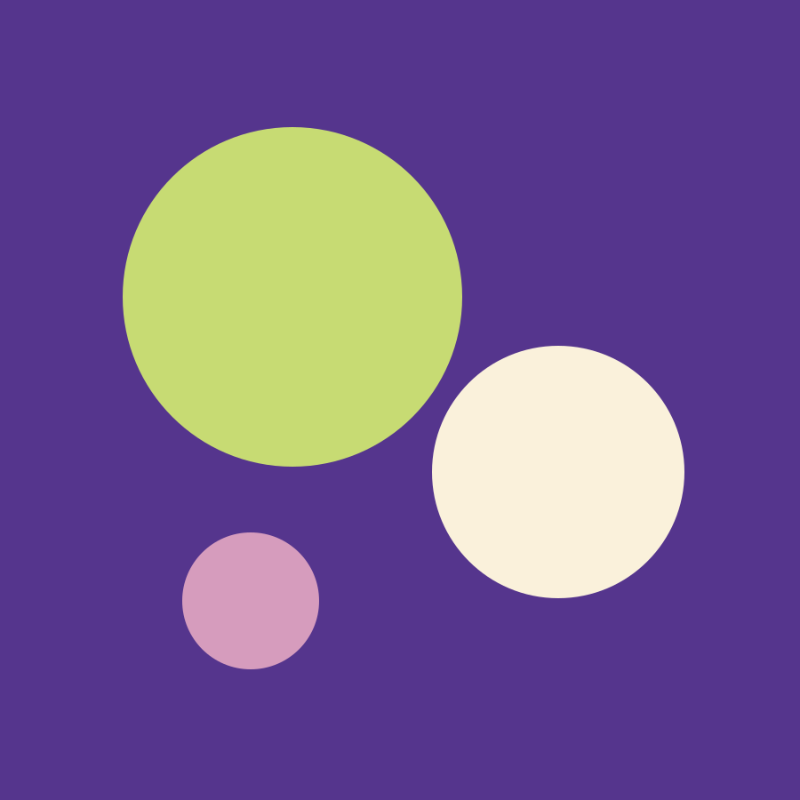
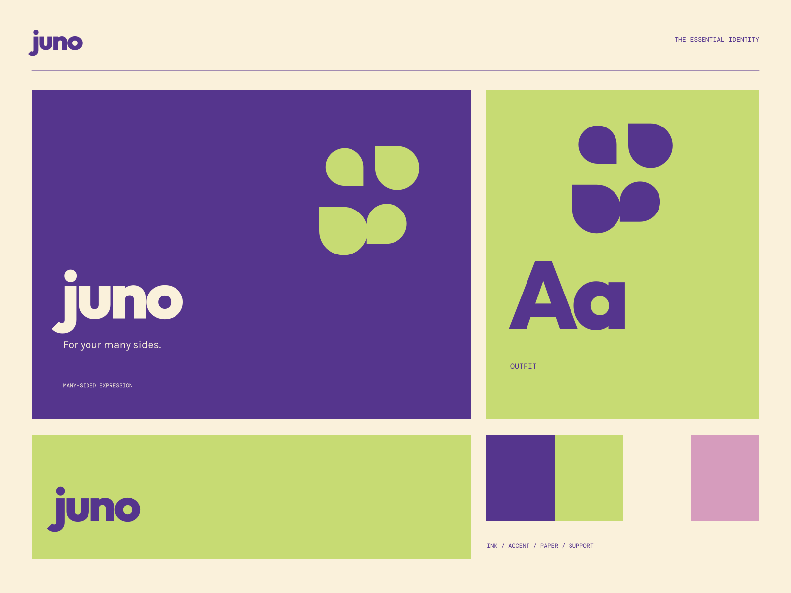

01
Mix it your way
A little collection with a lot of possible combinations.
OBJECTS FOR SELF-EXPRESSION
For your many sides. Personality, in good company.

A coherent little world
Personality, in good company. For your many sides.
01
A little collection with a lot of possible combinations.
02
Objects chosen for how they make your world feel.
03
Room for the changing, interesting person you already are.

The point of view
Asymmetric color orbs, editorial cutouts, highly rounded lettering, and accessories-as-sculpture. Confident complementary blocks celebrate the many versions of you.